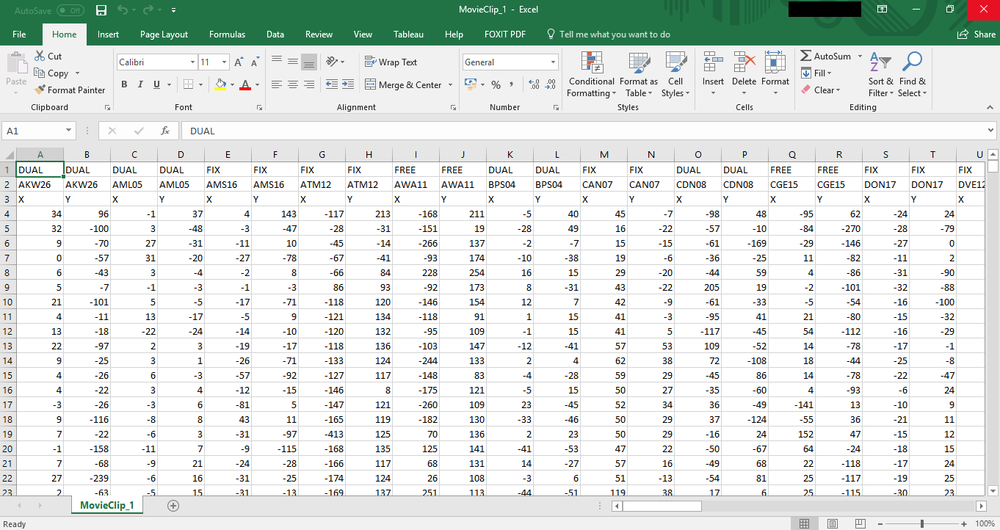
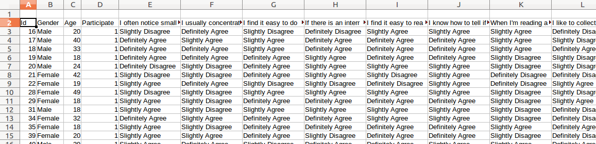
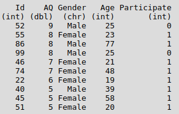
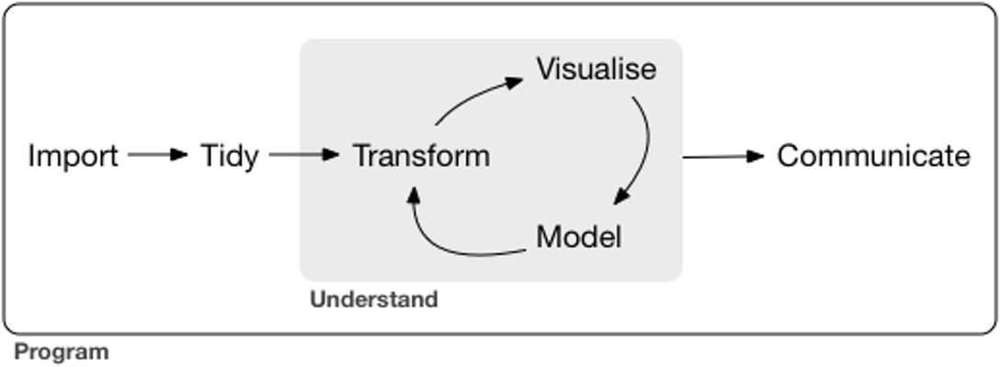
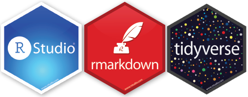
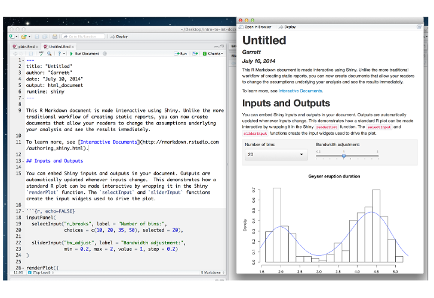
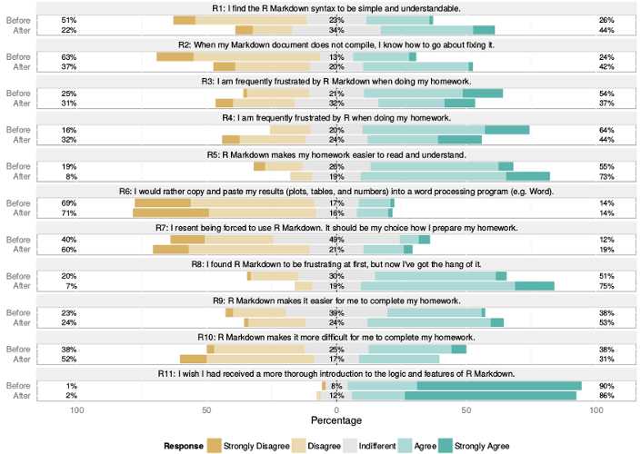

Created: 2018-03-08 Thu 15:41
It’s not just about changing what you teach…
it’s about building a community
It’s not just about R, it’s about:

“I want to have the data file so there are only 4 columns - PARTICIPANT CODE, CONDITION, X, Y.”
 

Grolemund & Wickham, R for Data Science



Baumer, Cetinkaya-Rundel, Bray, Loi, & Horton (2014)
ggplot2Six verbs cover 90% of data tidying - Hadley Wickham
select() |
choose columns |
filter() |
choose rows |
mutate() |
create new columns |
arrange() |
sort the rows |
group_by() |
establish groups |
summarise() |
summarise data/groups |
| Y1 | R/RStudio/RMarkdown, data import, tidying, viz, probability & descriptive stats |
| Y2 | sampling distributions, GLM, correlation, regression, t-test, data simulation |
| Y3 | mixed-model ANOVA, multilevel regression |
| Y4 | advanced topics (factor analysis, psychometrics, etc) |
WHEN? ASAP!
WHERE? EVERYWHERE!
| 09:00 - 09:30 | Coffee and chat (58 Hillhead Street) |
| 09:30 - 10:00 | Introduction and philosophy |
| 10:00 - 10:30 | Our approach |
| 10:30 - 10:45 | Coffee and chat |
| 10:45 - 11:15 | Practicalities |
| 11:15 - 11:45 | Staff skill development |
| 11:45 - 12:15 | Student engagement |
| 12:15 - 13:00 | Lunch (move to Boyd Orr) |
| 13:00 - 14:00 | Lab demo |
| 14:00 - 14:30 | Coffee and questions |
| 14:30 - 15:00 | Assessment with assessr |
| 15:00 - 15:30 | Web exercises with webex |
| 15:30 - 16:30 | Wine and discussion |